The wall above a fireplace carries more visual weight than almost anywhere else in a living room.
Nail it, and the whole room feels pulled together.
Miss it, and not much else in the room can really make up for that.
Good news: the fix is almost always about scale.
Not a full redesign.

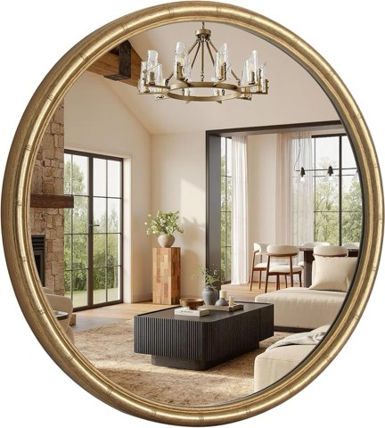
WallBeyond 24 Inch Gold Round Wall Mirror, Circle Mirror with Bamboo Texture
Shop on Amazon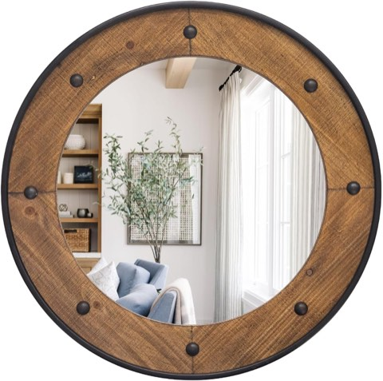
Rustic Round Wall Mirror 30 Inch, Natural Wood Frame with Black Metal Trim
Shop on AmazonGet the Proportion Right First
Before you pick a style, the fireplace itself sets the rules.
Whatever you hang above it should span at least two-thirds of the mantel's width.
Go narrower than that, and it reads as undersized, no matter how nice the piece is on its own.
A tall fireplace under a high ceiling can handle something vertical and dramatic.
A low, wide fireplace usually wants something horizontal instead.
Measure the actual wall before you shop for anything.
It saves a return trip later.
The Mistakes That Undo It Fastest
A tiny frame above a big fireplace looks lost, not intentional.
A TV mounted too high solves a design problem by creating a daily one — nobody wants a sore neck during movie night.
An overcrowded mantel — plants, frames, vases, candles, books, all fighting for attention — stops reading as styled and starts reading as cluttered.
Every one of these traces back to the same root cause: scale that was never actually measured.
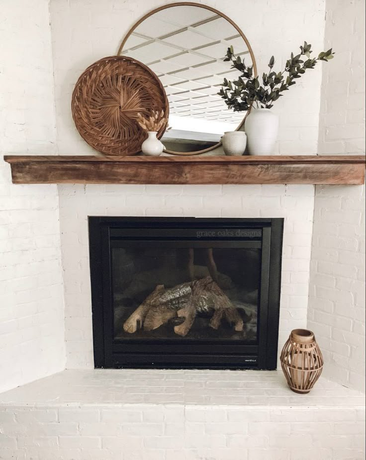
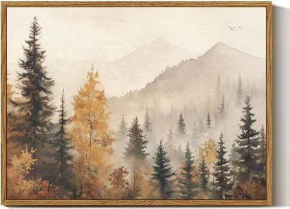
InSimSea Framed Canvas Wall Art, Fall Trees Forest Wall Decor, 12x16 Inch
Shop on Amazon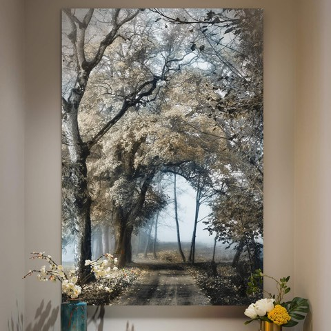
Renditions Gallery Canvas Nature Wall Art, Secretive Forest Path, 24"x36"
Shop on Amazon1. Leave It Completely Bare
This is a real option.
Not a placeholder until you find something better.
A fireplace with strong material or architectural detail of its own often does not need anything added above it.
This works especially well in a room that already has visual interest elsewhere — it does not need a second focal point competing for attention.
Restraint here reads as more confident than filling the space just because it is empty.
2. Mix Materials for Quiet Contrast
Combine two or three materials — wood, metal, stone, glass — above the fireplace, and you get interest without needing one big statement piece.
The key word is restraint.
Two or three materials reads as intentional.
Five starts to feel chaotic.
This pairs especially well with a simpler, more minimal mantel below.
It is subtler than one bold piece, but it rewards a closer look.
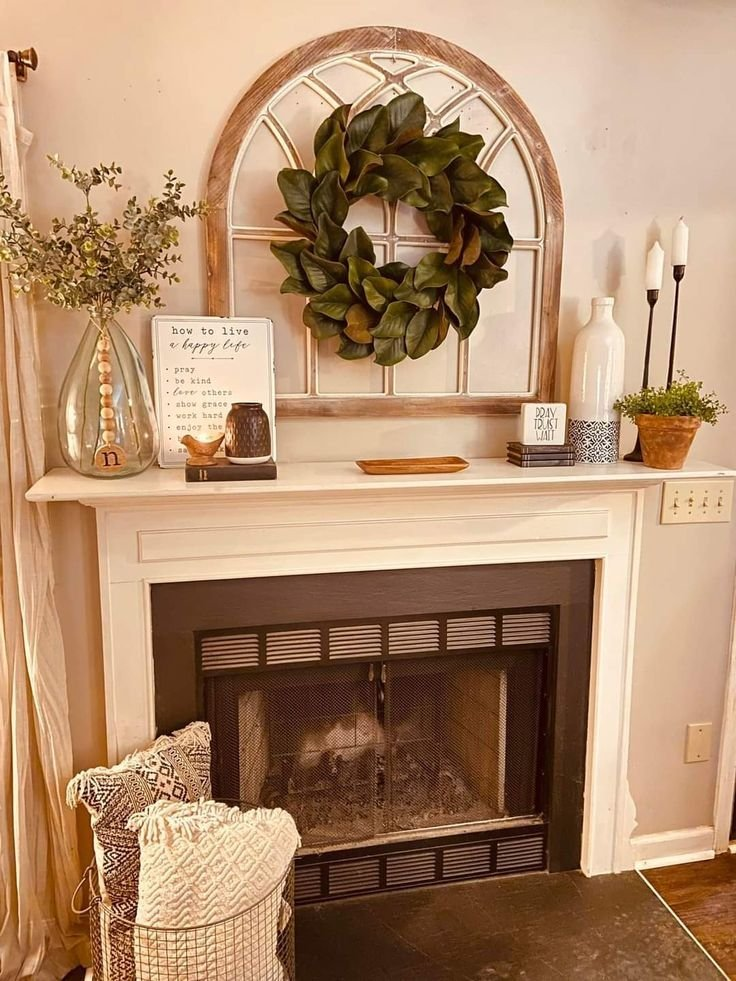
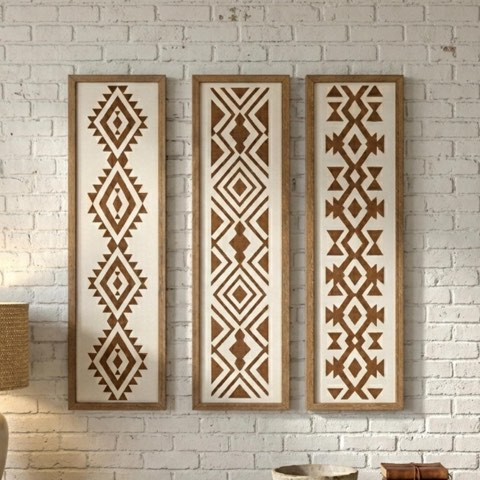
Minimalist Aztec Wood Wall Decor Set of 3, Geometric Scandinavian Boho Panels
Shop on Amazon3. Go Personal Instead of Store-Bought
Not every above-fireplace choice has to come from a store.
An enlarged family photo, properly framed.
A piece from a meaningful trip.
Something made by someone in the house.
All of it carries weight that a generic print just cannot match.
The same scale rules still apply here, though — personal does not mean undersized.
This option tends to make the whole room feel like an actual home instead of a showroom.
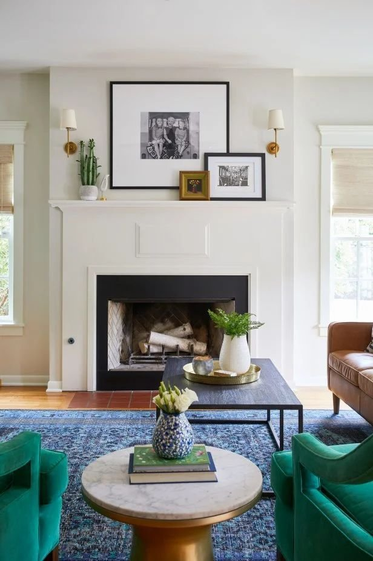
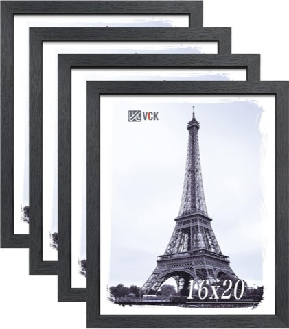
VCK 16x20 Frames Black, 4 Pack, Wide Thick Wood Border, for Poster/Prints
Shop on Amazon4. Hang One Vertical Piece
For a narrower or taller fireplace, one vertical piece usually reads better than something wide and horizontal.
A tall mirror, a narrow art print, or a vertical sculptural element all fit this shape well.
This suits a more modern or minimal surround, where one clean line feels more intentional than a cluster of items.
Less is competing for attention, which keeps the whole wall feeling calm.
5. Build Shelving Right Into the Wall
Shelving that continues above the fireplace itself, not just beside it, turns the wall into real, usable storage.
Books add color and texture while actually being useful, not just decorative.
This takes more planning than most ideas here — weight and mounting become real considerations that high up.
Done well, it reads as custom millwork, not an afterthought bolted on later.
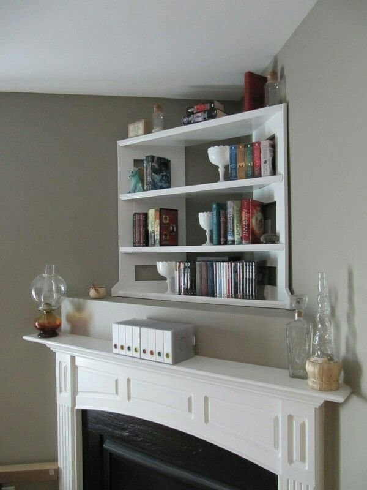
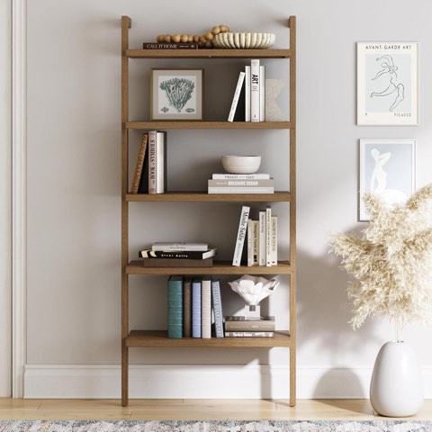
Nathan James Beacon 5 Tier Bookshelf, Wall Mounted Bookcase, Solid Wood
Shop on Amazon6. Plan a Gallery Wall, Do not Just Assemble One
A gallery wall above the fireplace works, but only when it is planned, not thrown together piece by piece over time.
A consistent frame color, or a shared mat width, keeps a mix of art sizes from feeling random.
Lay the whole arrangement out on the floor first.
It saves the wall from a dozen extra nail holes.
This suits anyone with a growing art collection that does not fit into one single piece.
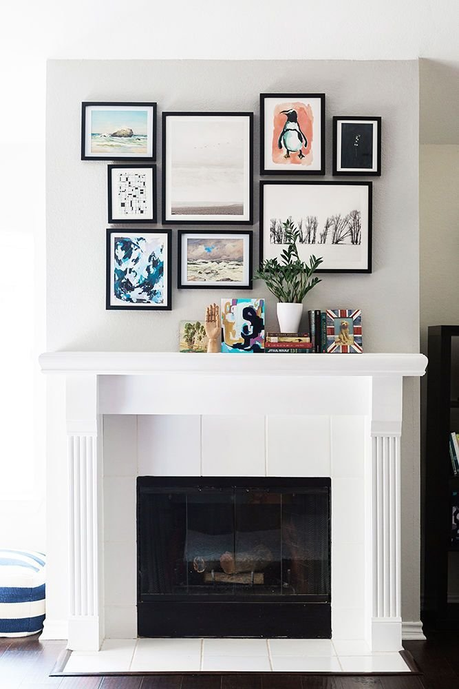
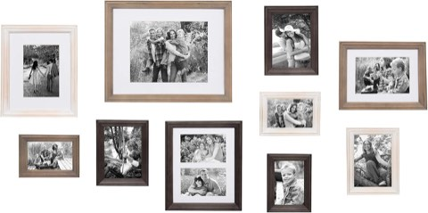
Kate and Laurel Bordeaux Gallery Wall Kit, Set of 10 Assorted Size Frames
Shop on Amazon7. Layer the Mantel Itself
Layering objects at different depths and heights on the mantel adds real dimension, no wall-mounted piece required.
A taller object in back, something medium-sized to the side, one low accent up front — that keeps the eye moving across the whole mantel.
This works best alongside a mirror or art, rather than replacing it entirely.
It is also one of the easiest things on this whole list to adjust seasonally.
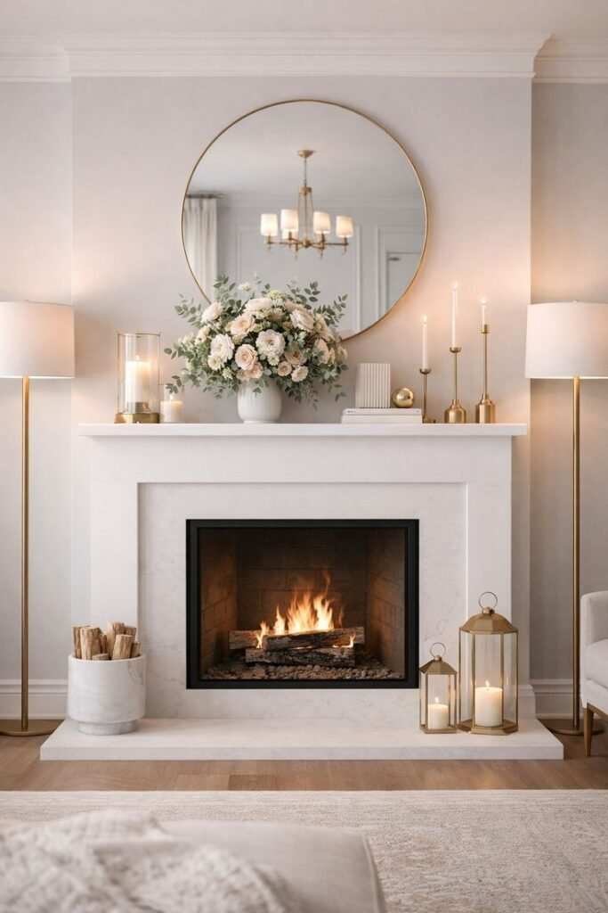
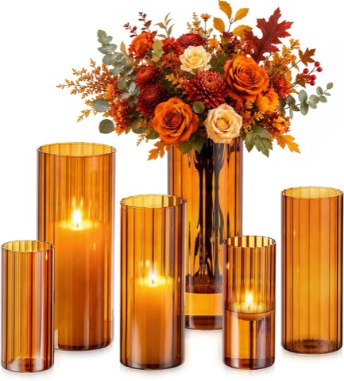
Glasseam Hurricane Glass Candle Holders, 6 Pcs Amber Ribbed Flower Vase Set
Shop on Amazon8. Go Floor-to-Ceiling With Stone or Plaster
Extending stone or plaster the full height of the wall turns the fireplace into the room's clear architectural anchor.
This is a bigger commitment than any decorative option on this list, but it rarely needs updating once it is finished.
It suits a room that is built around the fireplace as the primary focal point from the start.
Once this is in, very little else needs to go above it at all.
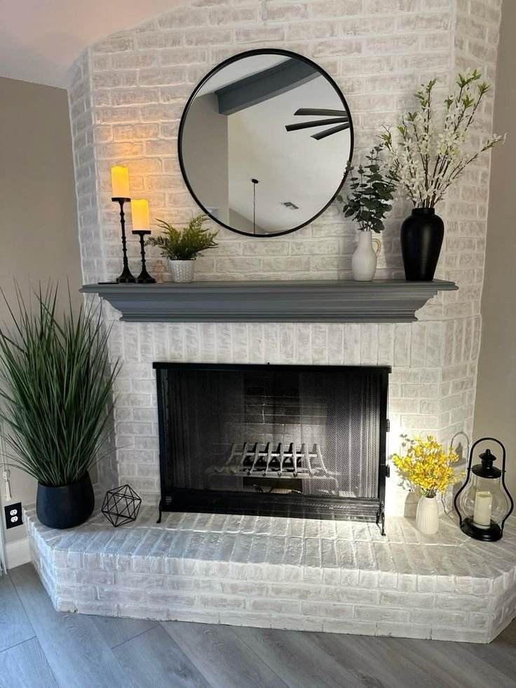
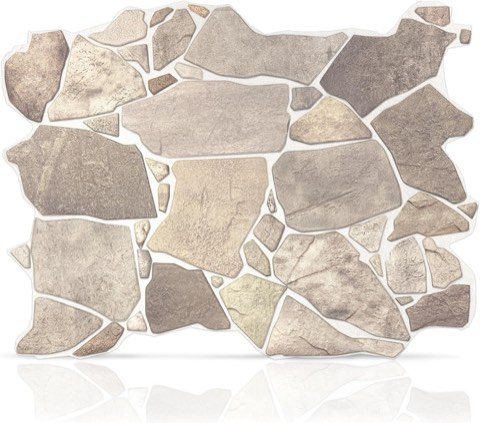
3D Faux Stone Wall Panels, Wild Boulder, Pack of 10, Covers 28.86 Sq Ft
Shop on Amazon9. Let a Sculptural Piece Read as Art
A sculptural object does not need a frame to hold a wall's attention.
Ceramic, wood, or metal forms all work, especially mounted on a simple bracket or small shelf.
This suits a fireplace wall that already has strong architectural detail and does not need more visual noise added to it.
One well-chosen piece tends to outperform several smaller decorative objects combined.
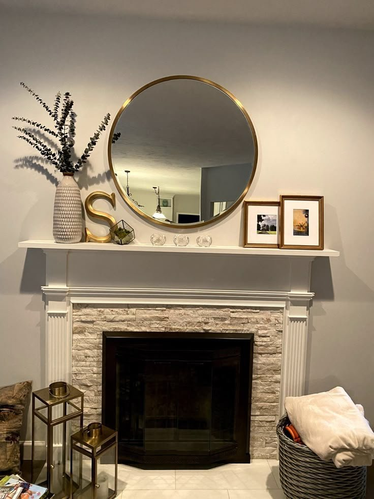
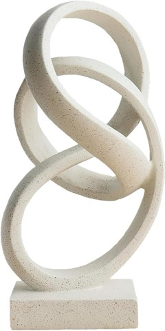
10" Modern Abstract Ribbon Decorative Sculpture, Knot Sculpture, Home Decor
Shop on AmazonGold Leaf Home Decor Set, Metal Leaves Statues, Modern Artistic Sculptures
Shop on Amazon10. Add Texture With Panels or Slatted Wood
A textured treatment behind the mantel adds real depth without relying on one large object to do all the work.
Slatted wood, fluted panels, a subtle 3D texture — all of it catches light differently throughout the day.
This pairs especially well with a TV mounted above the fireplace, since the texture still adds interest even when the screen's off.
It is a bigger project than hanging art, but it changes the whole wall, not just one section of it.
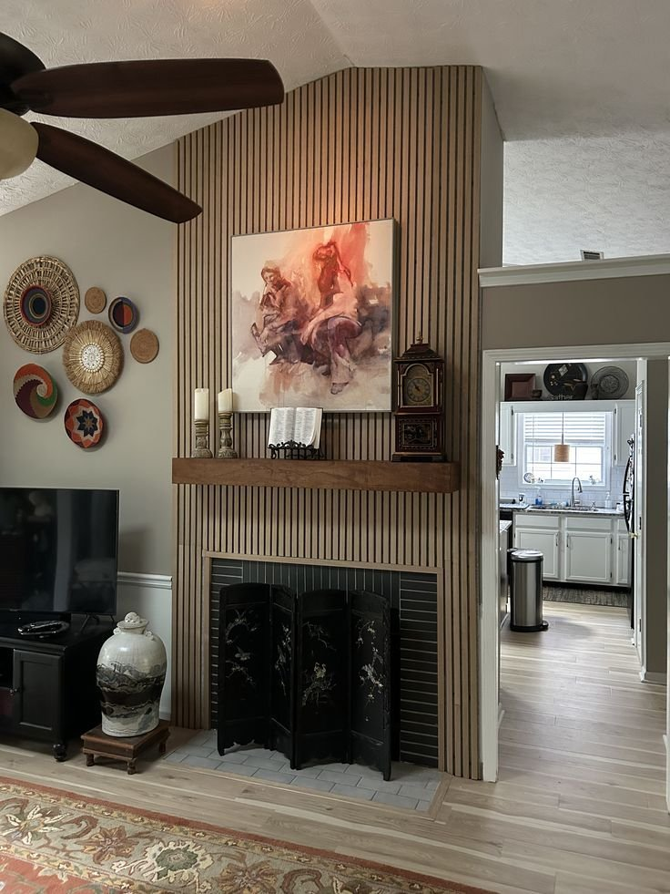
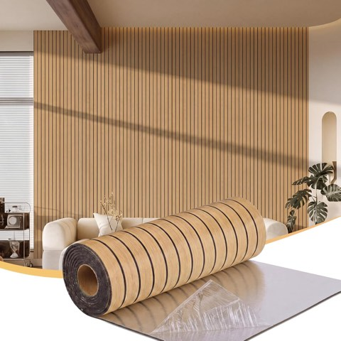
Geelin Peel and Stick PVC Wood Slat Wall Panel Decor 118" x 15.75", Oak
Shop on Amazon11. Mount the TV Low and Keep It Scaled Right
A TV above the fireplace is common for a reason — in a lot of rooms, it is the only practical spot.
Keep it low-profile and properly scaled to the mantel, and it will not dominate the wall.
A frame-style TV, or a sliding art cover, softens its presence whenever it is switched off.
Mounting height matters more than people expect, too.
Too high, and it is genuinely uncomfortable to watch.
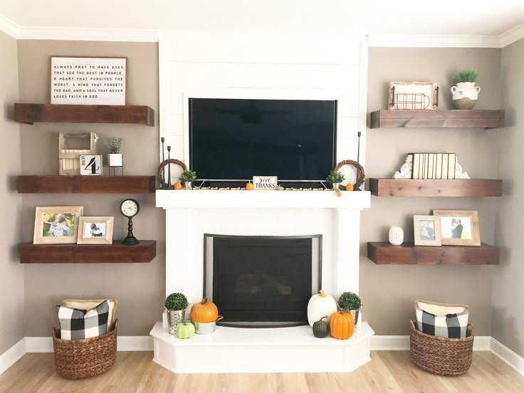
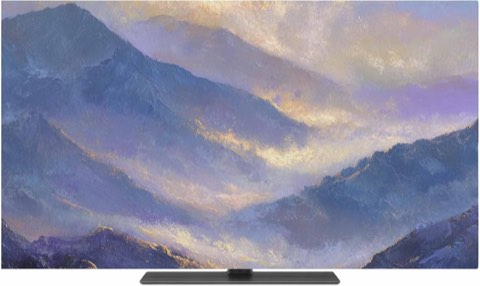
Vintage Mountain Oil Painting Art Indoor TV Cover, Elastic TV Screen Protector
Shop on Amazon12. Frame the Fireplace With Built-In Shelving
Flanking the fireplace with built-in shelving turns the whole wall into one cohesive feature instead of a single focal point.
It adds real storage and display space without needing a floating shelf directly above the mantel itself.
This works best as a planned renovation rather than a quick add-on, since it changes the wall's actual structure.
Once it is in place, it tends to become the most-used storage in the entire room.
13. Hang a Slim Mirror
A mirror above the fireplace bounces light back into the room, which matters most if natural light is limited.
A slim frame keeps it from feeling heavy, even at a larger scale.
Round, arched, or rectangular — all of it works, as long as the proportions match the fireplace below.
This is one of the few above-fireplace choices that is genuinely functional, not just decorative.
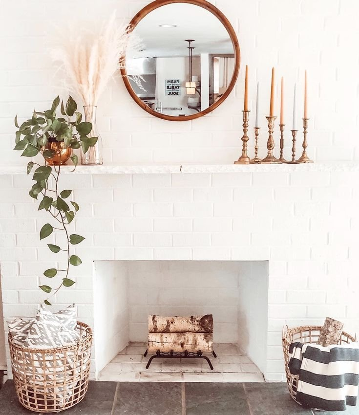
14. Add a Minimal Floating Shelf
A single floating shelf above the fireplace keeps the styling flexible, without committing to permanent built-ins.
A few curated objects — not a crowd of them — is what lets the shelf read as intentional.
It is easy to update seasonally without redoing the whole wall every time.
This suits a smaller fireplace that cannot really support a heavier, more built-in treatment.
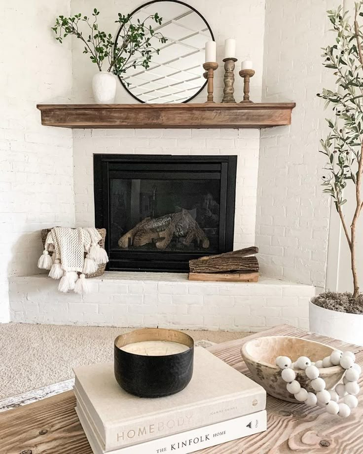
15. Go Big With One Statement Piece
One large piece, properly scaled to the wall, does more than a cluster of smaller ones ever could.
It gives the eye one clear place to land instead of several competing ones.
Abstract, landscape, or a bold graphic print all work, as long as the size is actually right.
This is often the simplest fix for a fireplace wall that is felt unfinished for a while now.
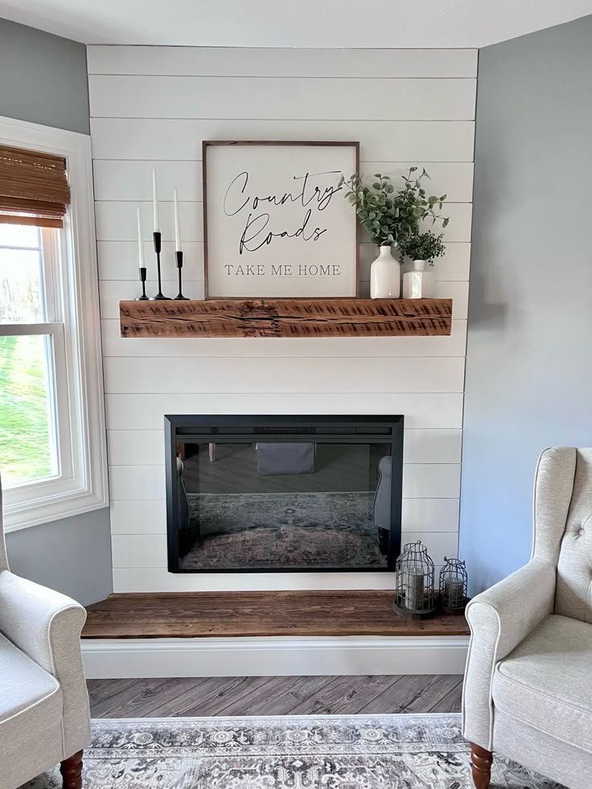
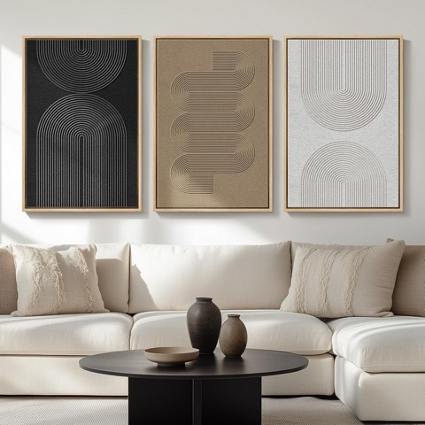
Large Framed Boho Black White Abstract Wall Art for Living Room, 24x36 In
Shop on AmazonBlue White and Gray Abstract Canvas Wall Art, Framed Large Print, 20x40
Shop on AmazonMeasure First, Decide Second
Trust the actual wall in front of you, not whatever's trending this year.
Measure first, then pick a direction that matches the fireplace's real scale and the room's existing style.
A piece sized correctly for the space will always outperform a trendy one that is the wrong fit.
Start with proportion.
Everything else gets a lot easier after that.